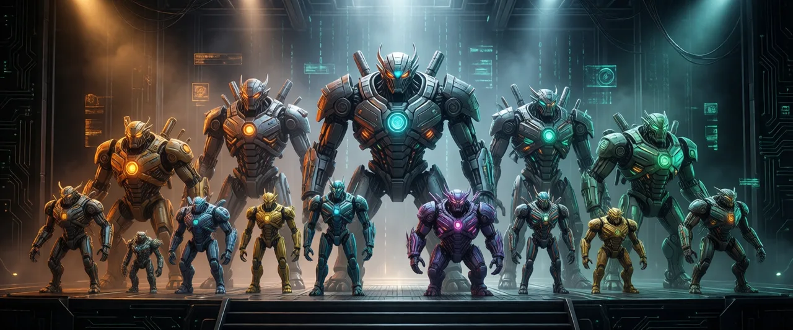

The model menagerie — 14 builders and their personalities

A field guide to the 14 builders in src/graphs.js. They're grouped by tier, which
tracks text-encoder capacity — the whole reason prompts come in s/m/l. All render
1280x720.
When the contestants arrived
Their download timestamps tell their own story:
- Wan 2.1 — 1 May: the veteran, pulled months earlier as a video model and only later drafted to make stills.
- Flux.2 Klein 4b & 9b, Z-Image Turbo — 31 May.
- Ideogram 4 — 13 June.
- The main roster — a frantic ~70-minute download spree on the night of 22 June: SDXL base (22:12), Qwen-Image 2512 (22:13), Schnell (22:19), Chroma (22:24), LongCat (22:42), Ovis (23:00), RealVisXL (23:15), Juggernaut (23:22). Eleven minutes after the last one landed, the first probe render fired at 23:33.
- Krea 2 — 24 June, 14:25: the latecomer, arriving two days after the rest (first frame at 14:27) before it fought us into the small hours.
Tier s — CLIP encoders (~77 tokens)
- sdxlbase / realvisxl / juggernaut — one shared
sdxlbuilder, differing only by checkpoint (ckpt:), each with an SDXL-Lightning 4- or 8-step LoRA (picked by step count) andsgm_uniform. The cheap, fast baseline trio.
Tier m — T5 / UMT5 encoders
- schnell — Flux.1 Schnell (GGUF Q4_K_S), dual CLIP (
clip_l+t5xxl),FluxGuidance 3.5. - chroma — the full undistilled Chroma1-HD (GGUF),
t5xxl, a real negative prompt at cfg 4. No turbo build exists, hence its longest step ladder. - wan — Wan 2.1 t2v 1.3b: a video model coerced into a single still
(
EmptyHunyuanLatentVideo, length 1),umt5encoder, Wan VAE,ModelSamplingSD3.
Tier l — LLM-based encoders (long prompts)
- flux4b — Flux.2 Klein-4b,
qwen_3_4bCLIP, flux2 VAE. (See the black-at-10-steps incident.) - flux9b — Klein-9B (GGUF Q4_K_M),
qwen_3_8bCLIP. - zimage — Z-Image Turbo,
ModelSamplingAuraFlowshift 3, lumina2 CLIP,res_multistep. - qwen2512 — Qwen-Image 2512 (GGUF) + a Lightning 4-step LoRA.
- krea2 — GGUF Q8_0, minimal builder. (See the wee-hours revert.)
- ovis — Ovis-Image bf16,
ovisCLIP, cfg 4. - longcat — LongCat-Image (GGUF),
qwen_2.5_vl_7bCLIP. - ideogram — Ideogram 4 (GGUF), a dedicated
Ideogram4Scheduler, true-CFG at cfg 5.
Adding a checkpoint for an existing builder is config-only; a new architecture needs a
new builder here plus a models/tiers entry in config.